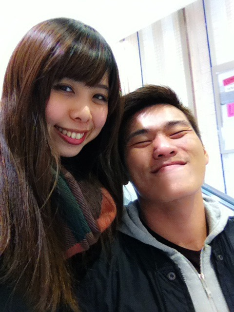
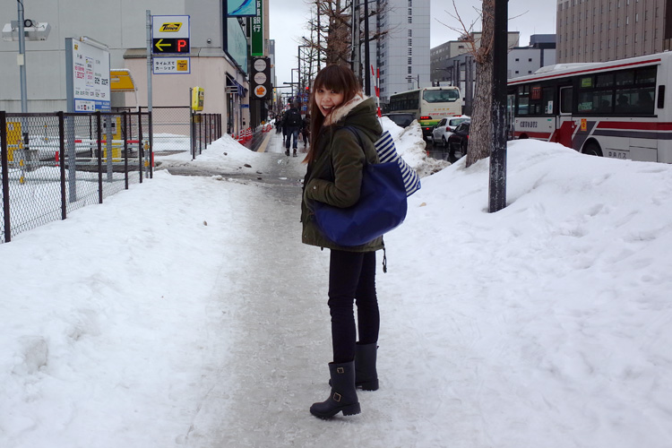

將近15年的時間，不只身邊的朋友問我們：怎麼能在一起這麼久！我們自己也對於這樣的緣分相當珍惜與驚訝，大眼瞪小眼這麼久的時間，還是能有說不完的話題、能夠舒服自在的在彼此身邊、給予彼此鼓勵支持與依賴、包容如此互補的性格、分享所有喜怒哀樂的情感。謝謝你，總是陪在我身邊。
從高中的時候認識，進而成為班對，大概是建功高中第一屆同學們唯一維持到現在並開花結果的情侶吧，但因為有了共同的環境、回憶與朋友，讓我們能夠直到現在都分享彼此的生活圈。
推甄上淡江的Blackie，我繼續努力考取台北的大學，沒想到最後的結果竟是機車來回將近3小時的景美世新大學。（明明就是淡江太遠！笑）開始了「台北遠距離」。距離沒有對我們造成困擾，在感情中我們相當獨立。努力著自己的生活，同時也沒忘了彼此間的聯繫，就這樣一年一年、一年一年持續牽著手一起走的日子。
大學畢業後Blackie繼續攻讀研究所，而我早一步進入職場成為新鮮人，作息與環境開始有了差異，所以我們決定開始同居生活，不打擾彼此的作息時間，但陪伴在彼此身邊。很幸運地，相處在同一個屋簷下的我們相當和諧、愉快，就像家人一般是最親近的存在。無論環境怎麼變，我們都在彼此的身邊。
在2014-2015期間，一年多的日本生活是我離開Blackie最久的日子，感謝Blackie的支持、感謝身邊所有親友的照顧，讓我完成人生中最珍貴、最值得回味的427天。
2016年，我們總算清算了這將近15年的日子，決定朝向下一個階段邁進，成為真正的家人。感謝給我們祝福的所有親愛的人，我們將持續牽著手，建立充滿愛與歡笑的可愛家庭。 :)
